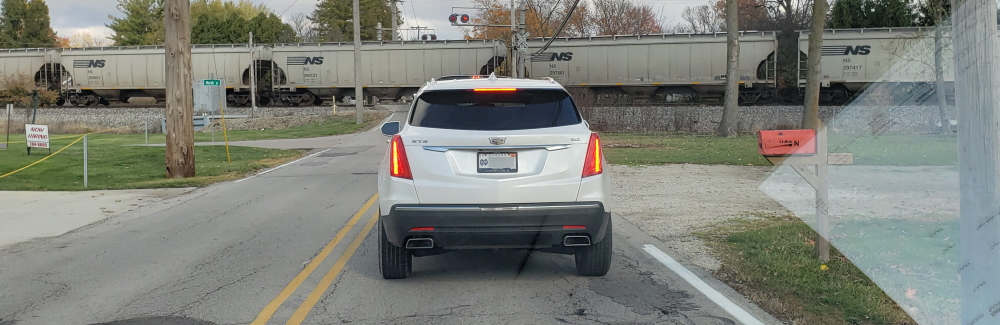
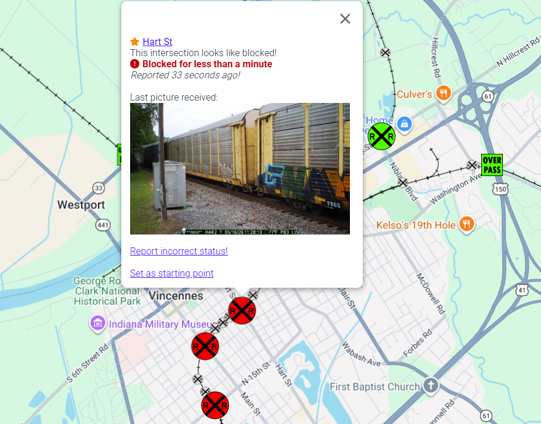
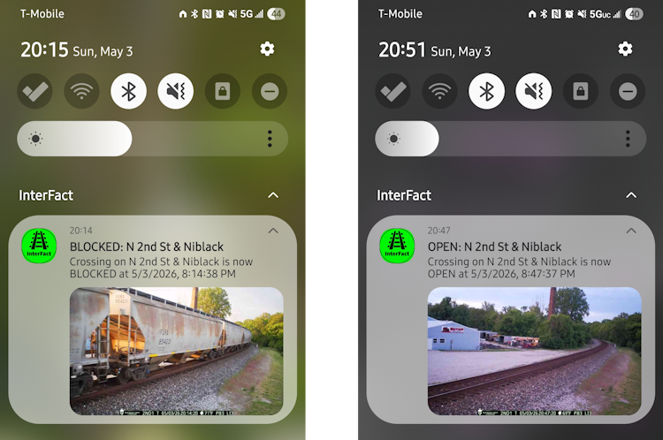
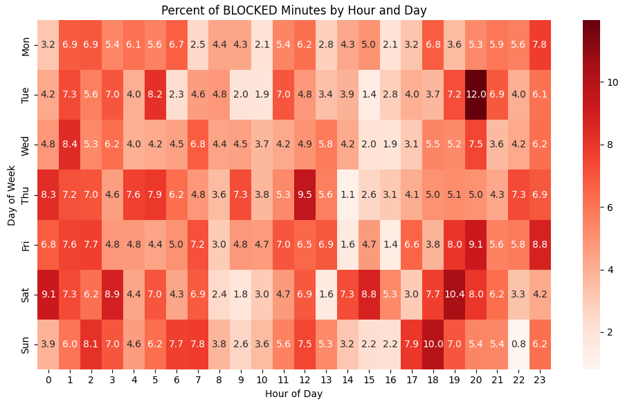
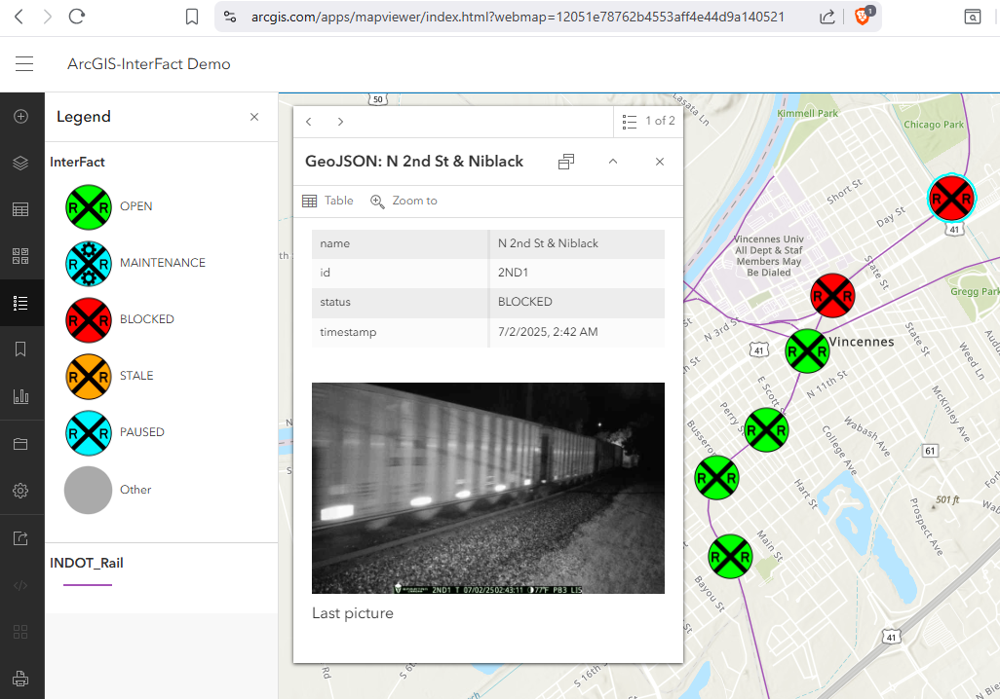
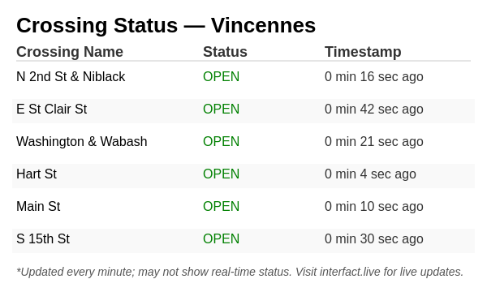
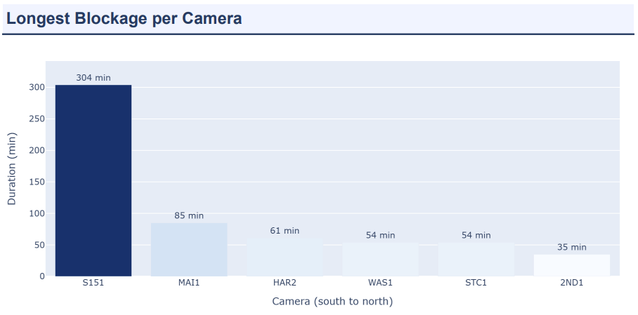
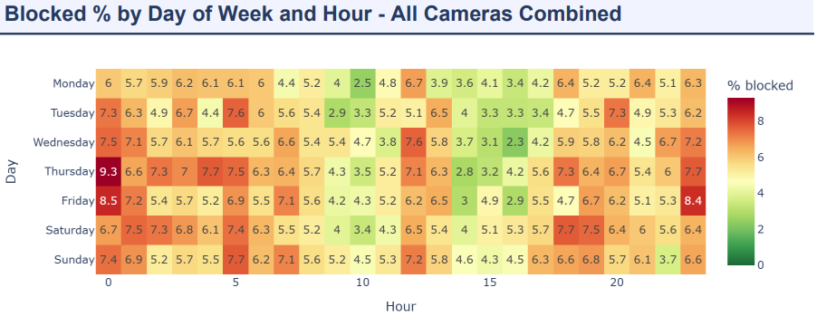
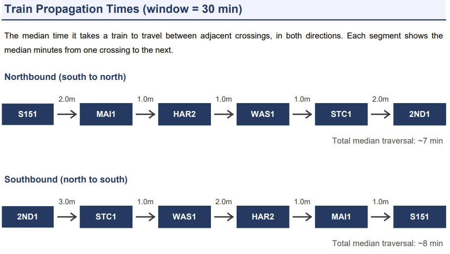
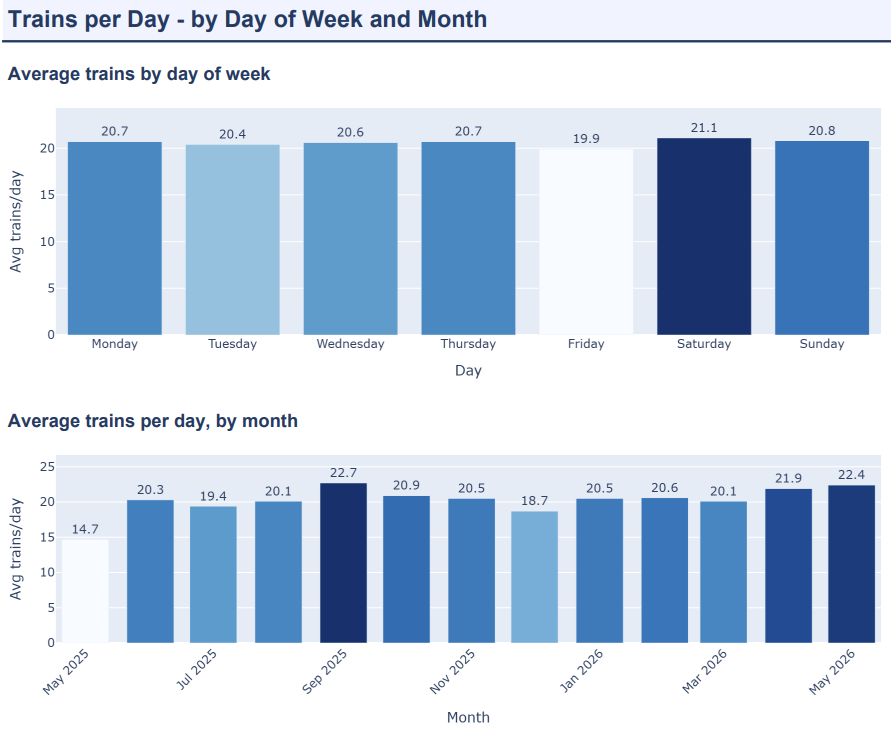

Smart Railroad Crossing Monitoring
Real-time railroad crossing intelligence powered by solar energy and AI. Know when trains block your roads before your residents do.
The Problem
Across hundreds of U.S. cities, freight trains stop on roads without warning. Commuters wait. Ambulances reroute. School buses stall. And no one knows when it will clear.
In a survey of 100+ residents in Muncie, Indiana, reported wait times ranged from 5 minutes to over an hour — with no way to check before driving into the delay.

The Solution
InterFact puts smart, solar-powered cameras at your crossings and turns raw video into actionable data — for engineers, first responders, and everyday drivers.
Solar-powered units with machine learning detect trains in real time — day or night, rain or shine. No city power needed.

A clean, map-based dashboard shows every crossing's status in real time. Open to engineers, residents, and decision-makers.

Push notifications tell drivers when a crossing blocks or clears. No more guessing — just check your phone before you drive.

Historic patterns and crossing data give city planners and legislators the evidence they need to act.
Integration
Integrate data into anywhere you'd like

First responders see live crossing data directly in ArcGIS — optimizing routes when seconds count.

Integrate live crossing status into any webpage or application for real-time visibility.
How It Works
No months-long infrastructure projects. InterFact deploys fast and delivers results immediately.
A solar-powered smart camera is mounted at the crossing. No wiring, no permits headaches, no city power required.
Machine learning identifies train presence in real time — blocked, clear, or moving. Data streams to the cloud instantly.
Maps, push alerts, and quarterly reports reach everyone who needs them — from city hall to the morning commute.
Proven Results




Why InterFact
A low-cost, high-impact upgrade to your transportation infrastructure — without the red tape.
Runs entirely on solar energy. No city power lines, no utility coordination, no ongoing energy costs.
Works at crossings with gates, lights, or nothing at all. If a train can block it, InterFact can monitor it.
Start with one camera or deploy across 10+ crossings. The system grows with your city's needs.
No months-long construction or permitting delays. Install and start collecting data within days.
ArcGIS integration helps fire trucks and ambulances find the fastest open route — automatically.
Quarterly detailed reports with full data transparency. Every step in our process is visible to your team.
Competitive per-crossing pricing designed for mid-sized city budgets. High impact, low cost.
Already live and delivering results in Vincennes, Indiana. Battle-tested, not theoretical.
Get Started
Join Vincennes, Indiana in bringing smart railroad crossing intelligence to your community. Reach out for a free demo.
Request a DemoDr. Huseyin Ergin